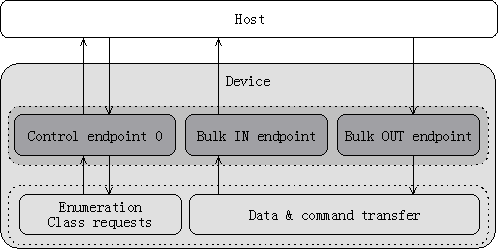

Description
massstorage.dir::USB MSD Basic
This page gives generic details on the MSD class.
Purpose
The MSD class defines how devices such as a hard disk, a USB floppy disk drive or a disk-on-key shall operate on the USB. These devices are referred to as mass storage devices, since they usually offer a high storage capacity. When plugged to a PC, a device complying to the MSD specification is accessed like any other disk on the system.
In practice, the specification only defines a way to wrap existing data transfer protocols, such as SCSI or the Reduced Block Commands (RBC) set. A list of the supported protocols and their uses will be given in the following section.
Data Transfer Protocols
The
Mass Storagae Class Specification Overview 1.2 supports the following set of devices:
Protocols for MSD devices
| Subclass Code | Command Block Spec. | Used by
|
| 01h | Reduced Block Commands(RBC) | Flash devices
|
| 02h | SFF-8020i, MMC-2 | CD & DVD devices
|
| 03h | QIC-157 | Tape devices
|
| 04h | UFI | Floppy disk drives
|
| 05h | SFF-8070i | Floppy disk drives
|
| 06h | SCSI transparent command set | Any |
The SCSI transparent command set comprises all SCSI-related specifications, such as SCSI Primary Commands (SPC), SCSI Block Commands (SBC), and so on. A command will be issued by the host to determine exactly with which standard the device is compliant.
The protocol used by the device is specified in its Interface descriptor, in the bInterfaceSubclass field.
Transfer Protocols
There are actually two different transport protocols for the MSD class:
- Control/Bulk/Interface (CBI) transport
- Bulk-Only Transport (BOT)
These two methods are described in two separate stand-alone documents. CBI can be considered obsolete and is being completely replaced by BOT. It was originally targeted at full-speed floppy disk drives. Therefore, the rest of this document will talk about Bulk-Only Transport exclusively.
Transport Protocol Codes
| bInterfaceProtocol | Protocol Implementation
|
| 00h | Control/Bulk/Interrupt protocol (with command completion interrupt)
|
| 01h | Control/Bulk/Interrupt protocol (without command completion interrupt)
|
| 50h | Bulk-only transport |
Interfaces & Endpoints
An MSD device only needs one single interface. The bInterfaceClass field of the interface descriptor should be set to MSD class code (0x08), the corresponding data transfer protocol code in the
bInterfaceSubclass field and transport protocol code in the
bInterfaceProtocol field can be found in the tables on above.
Exactly three endpoints (when using the Bulk-Only Transport protocol) are necessary for MSD devices.
The first one is the Control endpoint 0, and is used for class-specific requests and for clearing Halt conditions on the other two endpoints. Endpoints are halted in response to errors and host bad behavior during data transfers, and the CLEAR_FEATURE request is consequently used to return them to a functional
state.
The other two endpoints, which are of type Bulk, are used for transferring commands and data over the bus. There must be one Bulk-IN and one Bulk-OUT endpoint.

Mass Storage Device Driver Architecture
Class-Specific Descriptors
No class-specific descriptors for an MSD device using the Bulk-only transfport protocol.
Class-Specific Requests
Two class specific requests should be handled.
GetMaxLUN
A device can feature one or more Logical Unit (LU). Each of these units will be treated as a separate disk when plugged to a computer. A device can have up to 15 logical units.
The GET_MAX_LUN request is issued by the host to determine the maximum Logical Unit Number (LUN) supported by the device. This is not equivalent to the number of LU on the device; since units are numbered starting from 0, a device with 5 LUs should report a value of 4, which will be the index of the fifth unit.
Optionally, a device with only one LUN may STALL this request instead of returning a value of zero.
Bulk-Only Mass Storage Reset
This request is used to reset the
state of the device and prepare it to receive commands and data. Note that the data toggle bits must not be altered by a RESET command; same for the Halt
state of endpoints, i.e., halted endpoints must not be reset to a normal
state.
Command/Data/Status
Each MSD transaction is divided into three steps:
- Command stage
- Data stage (optional)
- Status stage
During the command stage, a Command Block Wrapper (CBW) is transmitted by the host to the device. The CBW describes several parameters of the transaction (direction, length, LUN) and carries a variable-length command block. The command block contains data in the format defined by the transfer protocol used by the device.
Command Block Wrapper Data Format
| Offset | Field Name | Length | Comment
|
| 0 | dCBWSignature | 4 bytes | Signature to identify CBW, must be 43425355h
|
| 4 | dCBWTag | 4 bytes | Tag sent by the host, echoed in the CSW
|
| 8 | dCBWTransferLength | 4 bytes | Length of transfer during the data stage
|
| 12 | bmCBWFlags | 1 byte | Bits 0-6: Reserved/obsolete
Bit 7: Transfer direction (0 = OUT, 1 = IN)
|
| 13 | bCBWLUN | 1 byte | Bits 0-3: LUN to which the command is sent
Bits 4-7: Reserved
|
| 14 | bCBWCBLength | 1 byte | Bits 0-5: Length of command block in bytes
Bits 6-7: Reserved
|
| 15 | CBWCB | 0-16 bytes | Command block to be executed by the device |
After the device has received and interpreted the command, an optional data stage may take place if the command requires it. During this step, data is transferred either to or from the device depending on the command, in several IN/OUT transfers.
Once the data stage is complete, the host issues a final IN request on the Bulk-IN endpoint of the device to request the Command Status Wrapper (CSW). The CSW is used to report correct or incorrect execution of the command, as well as indicating the length of remaining data that has not been transferred.
Command Status Wrapper
| Offset | Field Name | Length | Comment
|
| 0 | dCSWSignature | 4 bytes | Signature to identify CSW, must be 53425355h
|
| 4 | dCSWTag | 4 bytes | Copy of previous CBW tag
|
| 8 | dCSWDataResidue | 4 bytes | Difference between expected and real transfer length
|
| 12 | bCSWStatus | 1 byte | Indicates the success or failure of the command |
These steps are all performed on the two Bulk endpoints, and do not involve Control endpoint 0 at all.
Reset Recovery
When severe errors occur during command or data transfers (as defined in the
Mass Storage Bulk-only Transport 1.0 document), the device must halt both Bulk endpoints and wait for a
Reset Recovery procedure. The Reset Recovery sequence goes as follows:
- The host issues a Bulk-Only Mass Storage Reset request
- The host issues two CLEAR_FEATURE requests to unhalt each endpoint
A device waiting for a Reset Recovery must not carry out CLEAR_FEATURE requests trying to unhalt either Bulk endpoint until after a Reset request has been received. This enables the host to distinguish between severe and minor errors.
The only major error defined by the Bulk-Only Transport standard is when a CBW is not valid. This means one or more of the following:
- The CBW is not received after a CSW has been sent or a reset.
- The CBW is not exactly 31 bytes in length.
- The dCBWSignature field of the CBW is not equal to 43425355h.
Host Drivers
Almost all operating systems now provide a generic driver for the MSD class. However, the set of supported data transfer protocols may vary. For example, Microsoft Windows does not currently support the Reduced Block Command set.
Source
The documentation for this Page was generated from the following file:
massstorage.dir